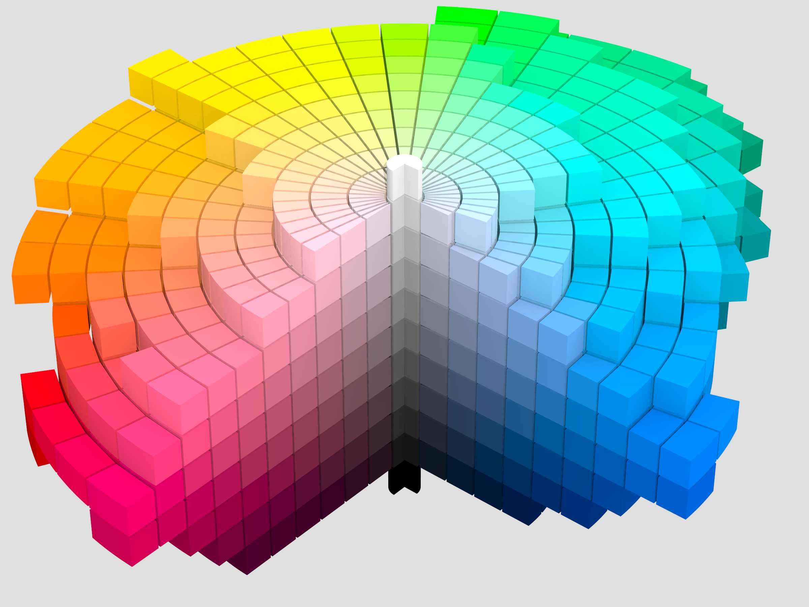
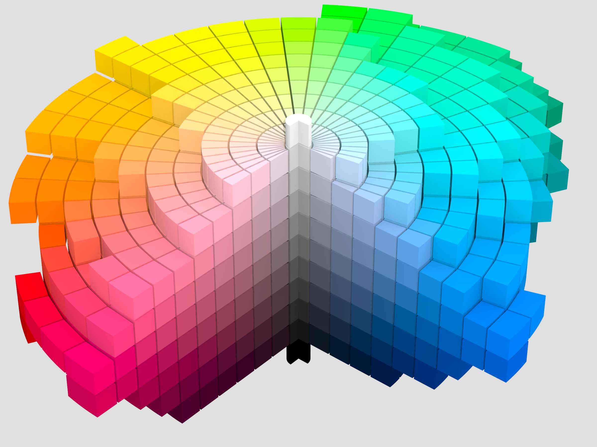

Munsell determined the spacing of colors along these dimensions by taking measurements of human visual responses. In each dimension, Munsell colors are as close to perceptually uniform as he could make them, which makes the resulting shape quite irregular. As Munsell explains:
Desire to fit a chosen contour, such as the pyramid, cone, cylinder or cube, coupled with a lack of proper tests, has led to many distorted statements of color relations, and it becomes evident, when physical measurement of pigment values and chromas is studied, that no regular contour will serve. — Albert H. Munsell, “A Pigment Color System and Notation”
Chroma, measured radially from the center of each slice, represents the “purity” of a color (related to saturation), with lower chroma being less pure (more washed out, as in pastels).[6] Note that there is no intrinsic upper limit to chroma. Different areas of the color space have different maximal chroma coordinates. For instance light yellow colors have considerably more potential chroma than light purples, due to the nature of the eye and the physics of color stimuli. This led to a wide range of possible chroma levels—up to the high 30s for some hue–value combinations (though it is difficult or impossible to make physical objects in colors of such high chromas, and they cannot be reproduced on current computer displays). Vivid solid colors are in the range of approximately 8.


 
